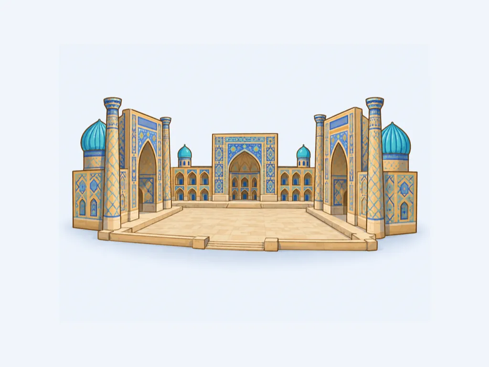
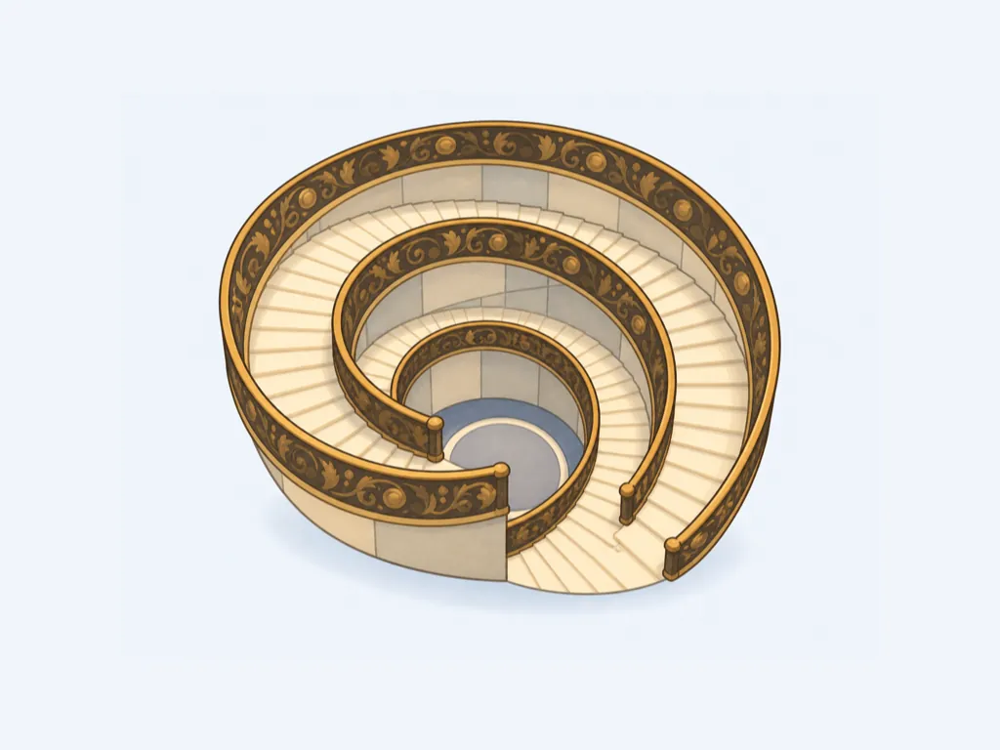
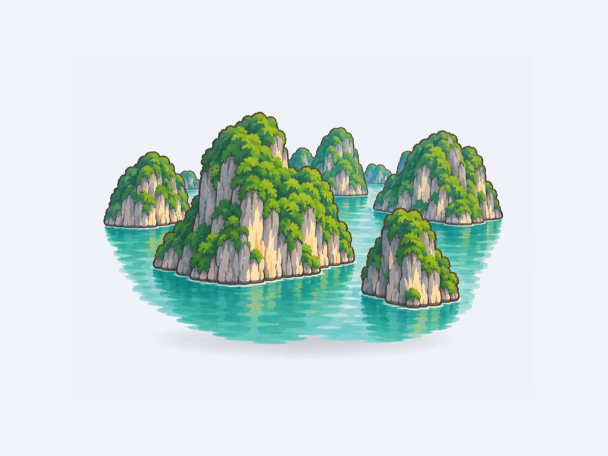
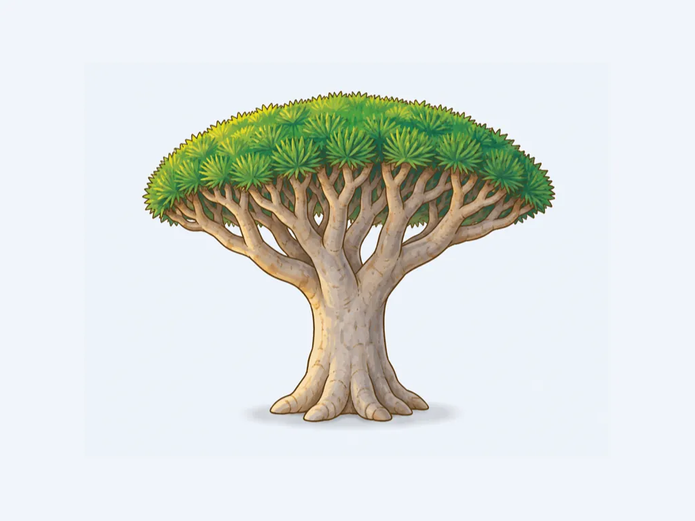
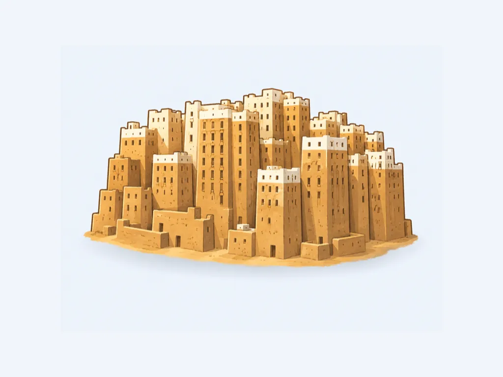
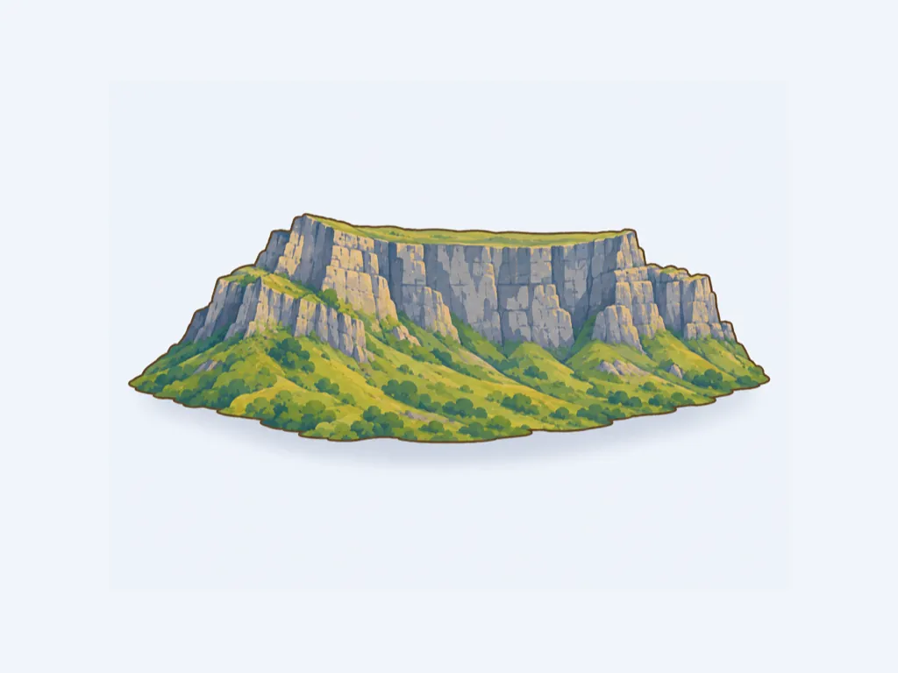
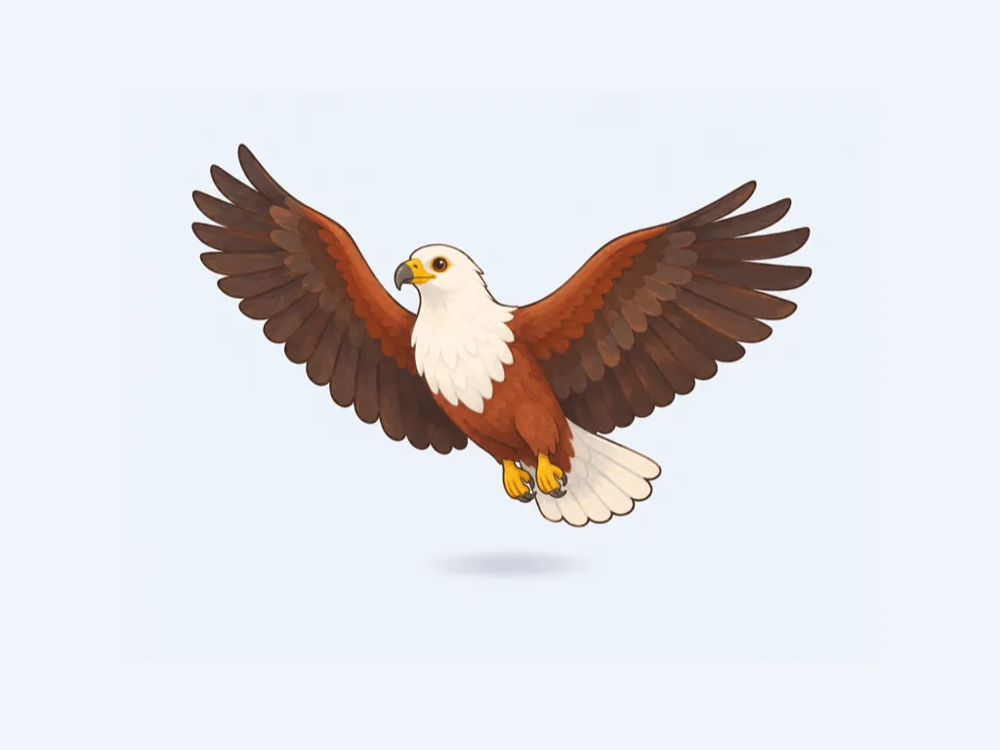
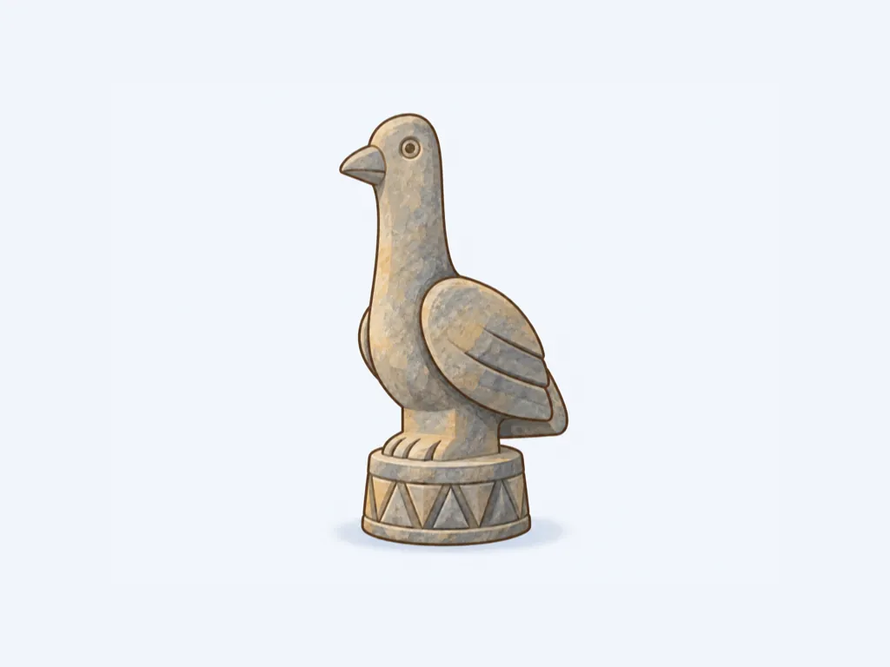

uz
 uz 국기
uz 국기
uzuz 국기
va va 국기
va 국기va
va 국기 vc
vc vc 국기
vc 국기 ve
ve ve 국기
ve 국기 veve 국기
veve 국기vn
 vn 국기
vn 국기
vnvn 국기 vu
vu vu 국기
vu 국기 vuvu 국기
vuvu 국기 ws
ws ws 국기
ws 국기 wsws 국기
wsws 국기
ye ye 국기
ye 국기
yeye 국기za
 za 국기
za 국기
zaza 국기
zmzm 국기
zm
zm 국기

zw zw 국기
zw 국기zw
zw 국기